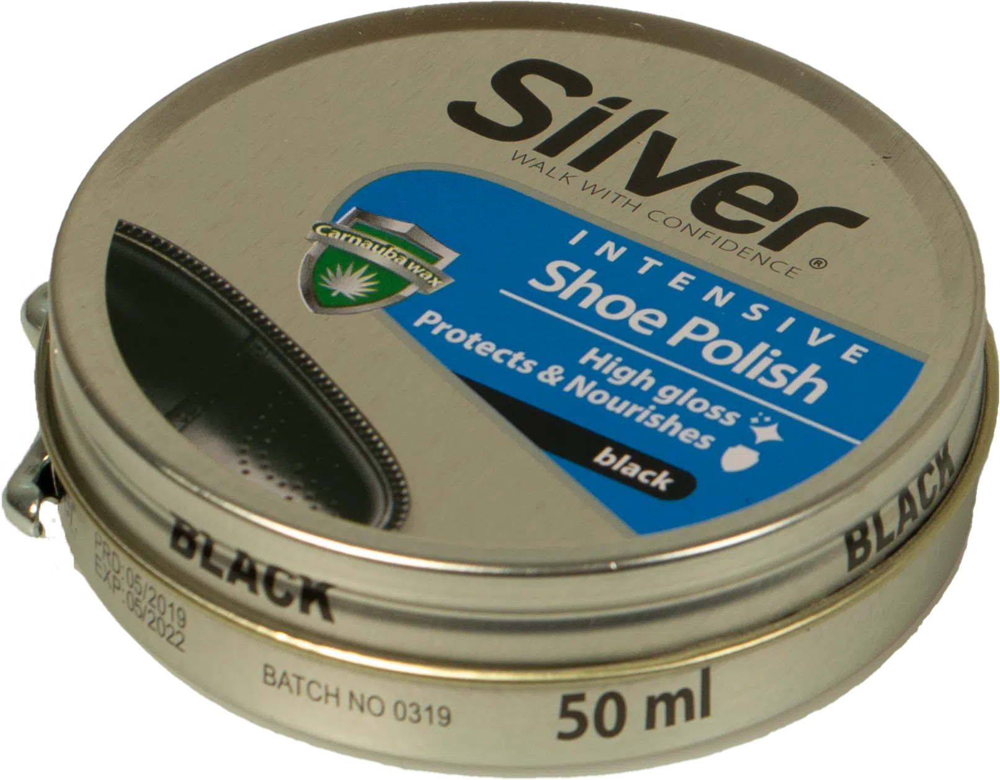
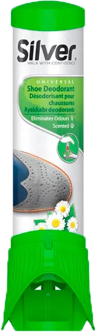
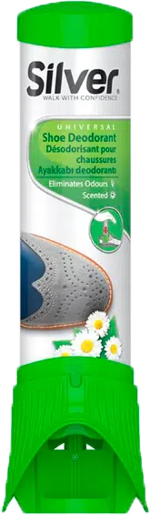

WALK WITH CONFIDENCE
PLEJEGUIDEN
SORT LÆDER
Puds dine sort lædersko med Silver Shoe Polish
1. Gør skoen klar. Start med at fjerne snørebånd, og rens herefter skoen grundigt med en skobørste, da du kan ødelægge dine sko, ved at lade skidt og andet væske sidde på dem, mens du rengør dem.
2. Brug en klud til at påføre små mængder Silver Shoe Polish til din sko, og smør det ligeligt ud over hele skoen.
3. Børst skoen indtil den skinner.
4. Hvis du vil give skoen lidt ekstra shine, brug da en ren klud til at påføre en smule vand ligeligt på skoen.
5. Nyd dine rene og skinnende sko!
Silver Shoe Polish fra Intensive serien
Silver Shoe Polish giver dine sko et fantastisk og langvarende skær. Den miljøvenlige vand-baserede opskrift, blandet med Carnauba Voks giver det bedste resultat for sko. Dækker ridser og efterlader en spejlblank overflade på minimal tid.
Supplerende Produkter
 
